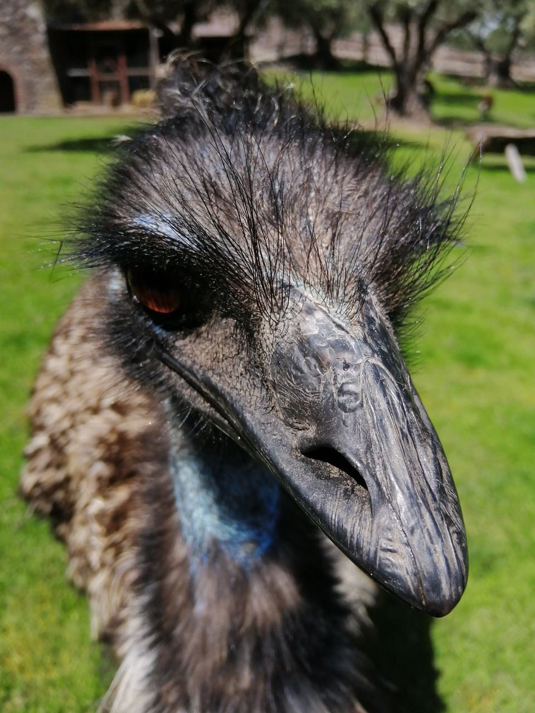

<body>
    <div class="container">
        
        <h1><u>Circular Profile Pics</u></h1>

        This is a raw image (no CSS styling except for max-width) <br/><br/>
        

        <br/><br/><br/><br/>

        <!-- CIRCULAR PROFILE PIC GOES HERE -->
        This is the circular profile picture that we want: <br/><br/>
        <div class="my-avatar"></div>

    </div>
</body>

<style>

body {
    font-family: 'Courier New', monospace;
}

.container {
    margin: 5% 15% 5% 15%;
    padding: 2% 5% 2% 5%;
    border: 1px solid black;
    border-radius: 4px;
    box-shadow: 2px 2px;
}

img {
    max-width: 30%;
}

/*  CIRCULAR PROFILE PIC STYLE GOES HERE */
.my-avatar {
    background-image: url('images/emu.jpg');
    background-size: cover;
    background-position: center ;
    height: 15vw;
    width: 15vw;
    border-radius: 50%;
}

</style>